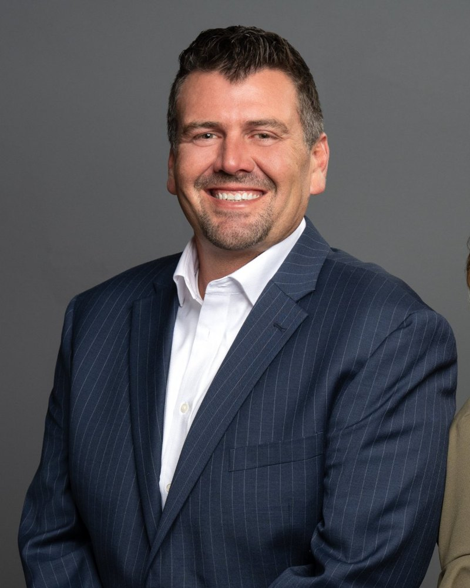
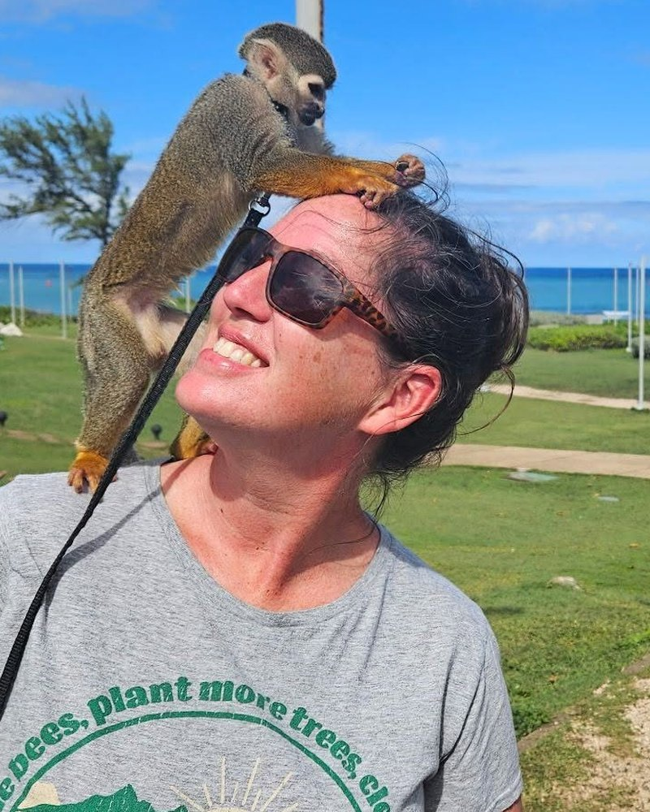

Mark Coffey
Mark has lived in Mooresville his entire life. His dad was a bricklayer and custom home builder, and Mark has been on construction sites since he could walk. After high school he joined the union and worked as a heavy equipment operator, hod carrier and laborer on some of the biggest projects in Indiana, then ran his own construction company doing everything from full builds to handyman work.
In 2013 a ditch collapsed on him, and the injury ended his construction career. Real estate let him stay connected to housing. Today, when he walks through a house, he's looking at the roof, the foundation and the mechanicals, not just the paint colors. That helps sellers price right and helps buyers know what they're getting into.
Most of Mark's day is spent with local leaders, learning as much as he can about the community, and working through problems so his clients don't have to. Solving the problem is the part of the job he loves most. He believes everyone deserves professional representation, regardless of price.
Mark has been married to Rebecca for 23 years, and they have two sons: Matthew, who's at Wabash College, and Benjamin, a senior at Mooresville. He's heavily involved in youth sports, the local schools, local politics and anything to do with Mooresville. Away from work he loves college football, any game he can get to, and hosting cookouts for friends and family. His favorite spots are Fountain Square, Mass Ave and Brown County.
Mark also hosts the Scars podcast, which tells the real stories behind success: not the polished brands you see today, but what it took and the sacrifices people made to get there.
"I'd rather wear out than rust out." Mark's motto

Patsy Coffey
Patsy has been selling real estate for 32 years. She's a Broker and a Certified Residential Specialist (CRS), and she works residential, land and development. After that long in the business, she'll tell you the job comes down to one thing: looking out for her clients' best interest.
She grew up in Kentucky and has called Morgan County home for 40 years. Of all the closings she's been part of, her favorite is still a first-time buyer getting their keys.
For Patsy, family is everything. "Without that you have nothing," she says. She loves family get-togethers, music of any kind, a good steak and Mexican food.
She's also serious about her health. Patsy lifts weights four days a week, gets 15,000 steps a day, does sprints twice a week and abs three times a week, and tracks her protein, fiber and saturated fat. She loves to cook and calls it her way of showing people love, so if you'd like one of her recipes, just ask. You'll find her workouts and recipes in Patsy's Health Corner.

Rebecca Coffey
Most of what Rebecca does happens behind the scenes. She keeps every file up to date and watches the paperwork and deadlines closely so problems get handled before they turn into surprises. From accepted offer to closing day, she keeps the lender, title company and other agent on the same page.
The part she loves most is the people. For sellers, that's showing their home in its best light with photography and hearing the stories and memories that go with the house. For buyers, it's the look on their faces when they find "the one."
Rebecca grew up in Indianapolis, graduated from Brownsburg High School and has lived in Morgan County for more than 20 years. She's been married for over 20 years and is a proud mom of two boys. She's a longtime member and board member at Lifeway Apostolic Church, and youth sports, Churches in Mission and local food pantries are close to her heart. "I believe most people have experienced a time in their lives when they needed a helping hand," she says, "and I appreciate organizations that work to make sure nobody is forgotten."
Away from work you'll find her playing pickleball, hiking, reading, at a concert or planning the next trip. Her yearly must-dos: A Christmas Carol at IRT, a walk downtown, dinner at Tony's and a stop at Dairy Queen.
"A great smile is a wonderful asset, but a good heart is pure gold." Dolly Parton, one of Rebecca's favorites
Faith and community are at the center of Rebecca's life, and she writes about both in Becca's Faith & Community corner.